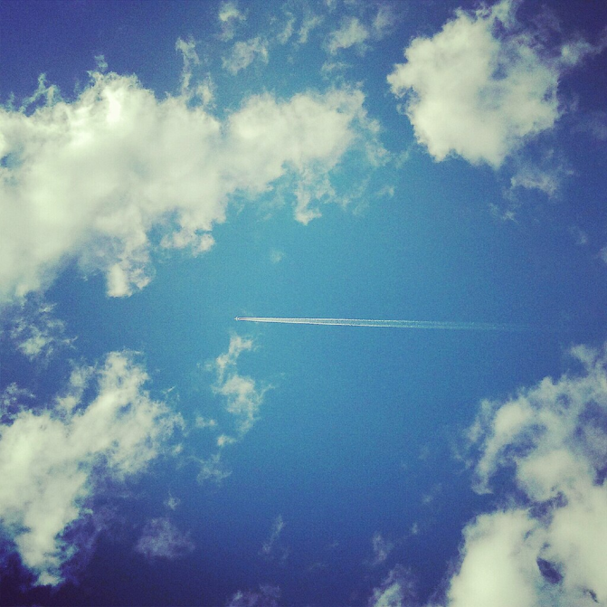
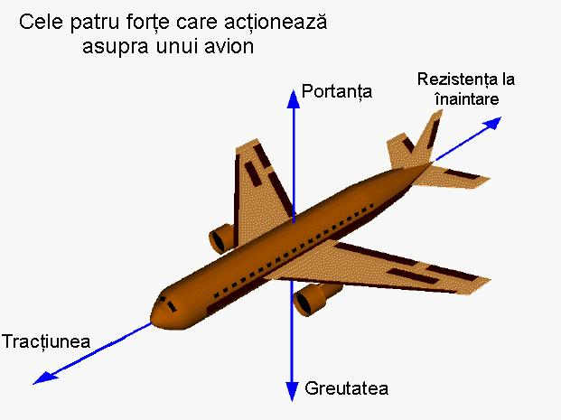
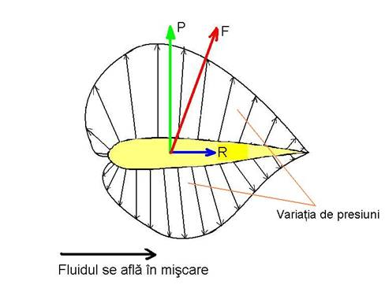

|
Asupra unei aeronave aflate în zbor acționează patru forțe care trebuie să se afle în echilibru. O forță în general poate fi interpretată ca o tragere sau o împingere asupra unui obiect într-o anumită direcție. Greutatea este o forță orientată întotdeauna spre centrul Pământului. Ea este direct proporțională cu masa avionului și depinde de încărcarea sa. Deși este distribuită asupra întregului aparat, ne putem imagina că ea este colectată și acționează asupra unui singur punct, numit centrul de greutate. În zbor, deși aeronava se rotește în jurul centrului de greutate, orientarea greutății rămâne tot spre centrul pământului. În timpul zborului greutatea scade constant datorită consumării combustibilului din rezervoare. Distribuția greutății și centrul de greutate se pot și ele schimba, de aceea pilotul trebuie să ajusteze constant comenzile pentru a ține avionul în echilibru. Tracțiunea este asigurată de sistemul de propulsie. Valoarea tracțiunii depinde de mai mulți factori asociați sistemului de propulsie: tipul motorului, numărul de motoare, comanda motorului, viteza și înălțimea de zbor. În figura alăturată, cele două motoare ale avionului sunt dispuse sub aripi și orientate paralel cu fuzelajul, deci tracțiunea va acționa pe linia central longitudinală a fuzelajului. La unele avioane (de exemplu Hawker-Siddeley Harrier/Harrier) direcția tracțiunii poate varia în funcție de evoluția pe care o execută. De exemplu la decolare ea este orientată la un anumit unghi față de axa longitudinală a avionului, pentru a "ajuta" avionul să decoleze. Însă, la avioanele turboreactoare, deși gazele de ardere sunt evacuate în sens opus sensului de zbor, acest lucru face ca avionul să fie "împins" înainte, pe principiul acțiune–reacțiune descris de Newton: oricare forță de acțiune are o forță pereche, egală și de sens contrar, numită reacțiune. Rezistența la înaintare (la mișcare) este forța aerodinamică care se opune oricărui corp ce se deplasează într-un fluid. Mărimea acestei forțe este influențată de mai mulți factori: forma aeronavei, densitatea și compoziția aerului, viteza. Direcția acestei forțe este întotdeauna opusă direcției de zbor și putem considera că ea "se concentrează" într-un singur punct, numit centru de presiune. Portanța este forța care ține avionul în aer și trebuie înțeleasă în raport cu celelalte trei. Ea poate fi generată de orice parte a aeronavei, dar la un avion obișnuit portanța este datorată în special aripii și în particular formei specifice în secțiune a aripii. Portanța este o forță aerodinamică datorată "trecerii" unui obiect printr-un fluid. Ea acționează asupra centrului de presiune și este definită ca fiind perpendiculară pe direcția de curgere a fluidului. Teoriile despre generarea forței portante au devenit surse de controverse și subiect de discuții aprinse. Deși explicația exactă și completă este destul de dificil de înțeles fără aparatul matematic adecvat, acest articol încearcă să expună principiile ei. Când două obiecte solide interacționează într-un proces mecanic, forțele sunt transmise sau aplicate într-un „punct de contact”. Dar când un corp solid interacționează cu un fluid, lucrurile sunt mult mai greu de descris, datorită faptului că fluidul își schimbă forma. Pentru un solid care este imersat într-un fluid, punctul de contact este orice punct de pe suprafața solidului. Deci avem de a face cu o forță distribuită, adică cu o presiune. 
|   |